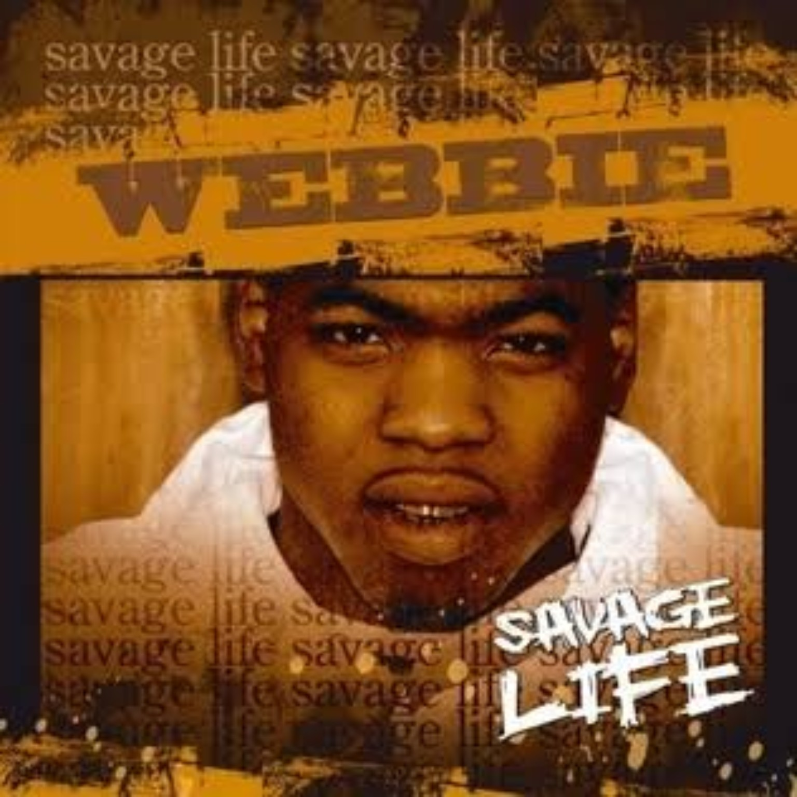
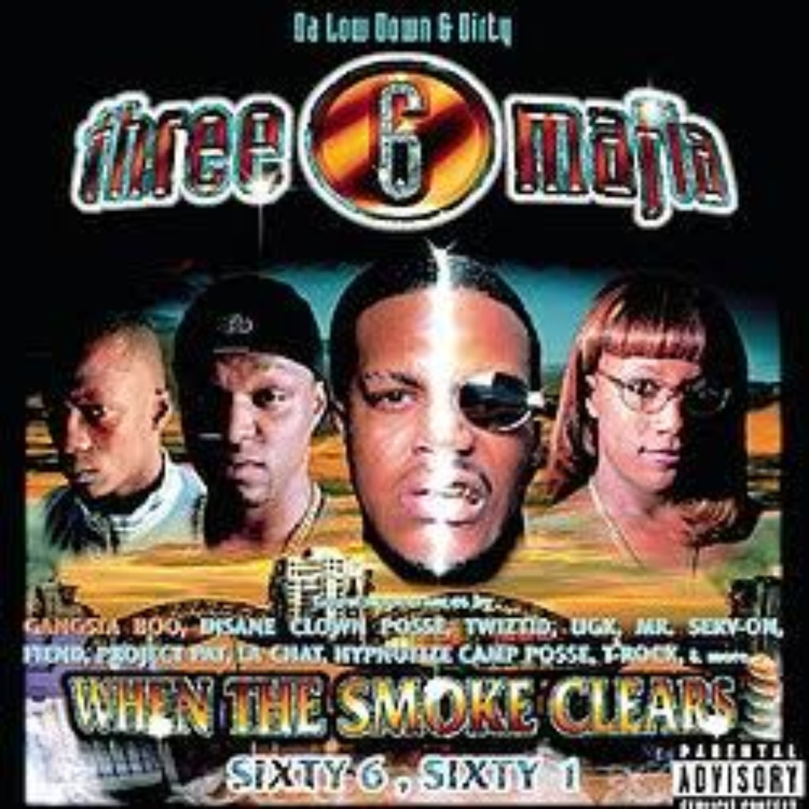
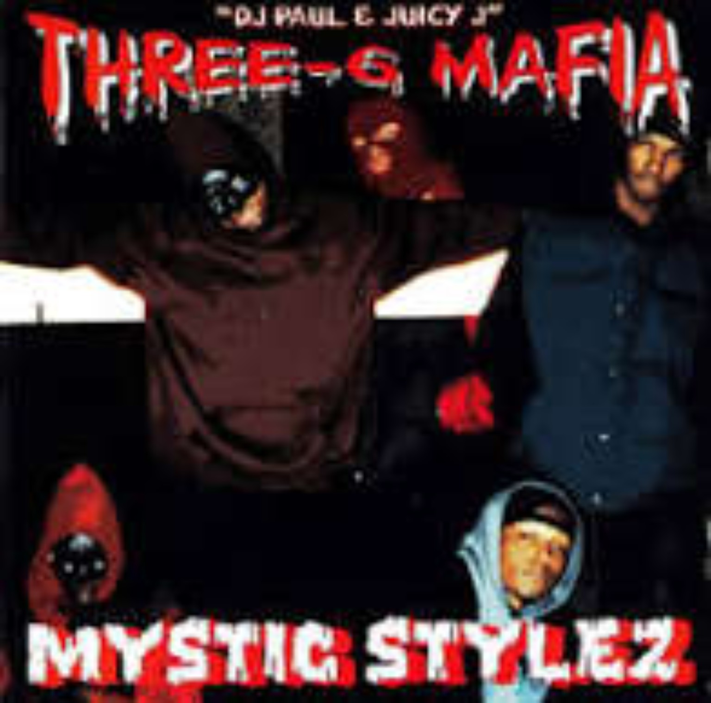
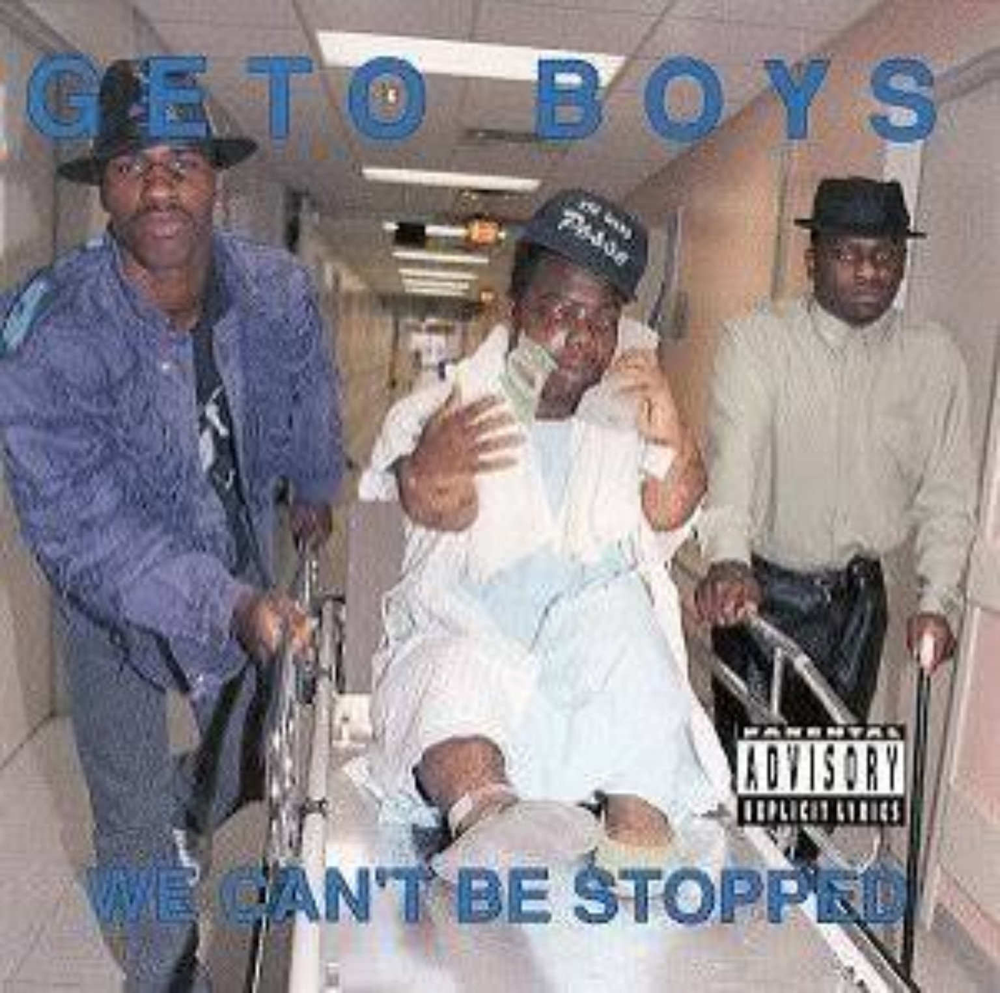
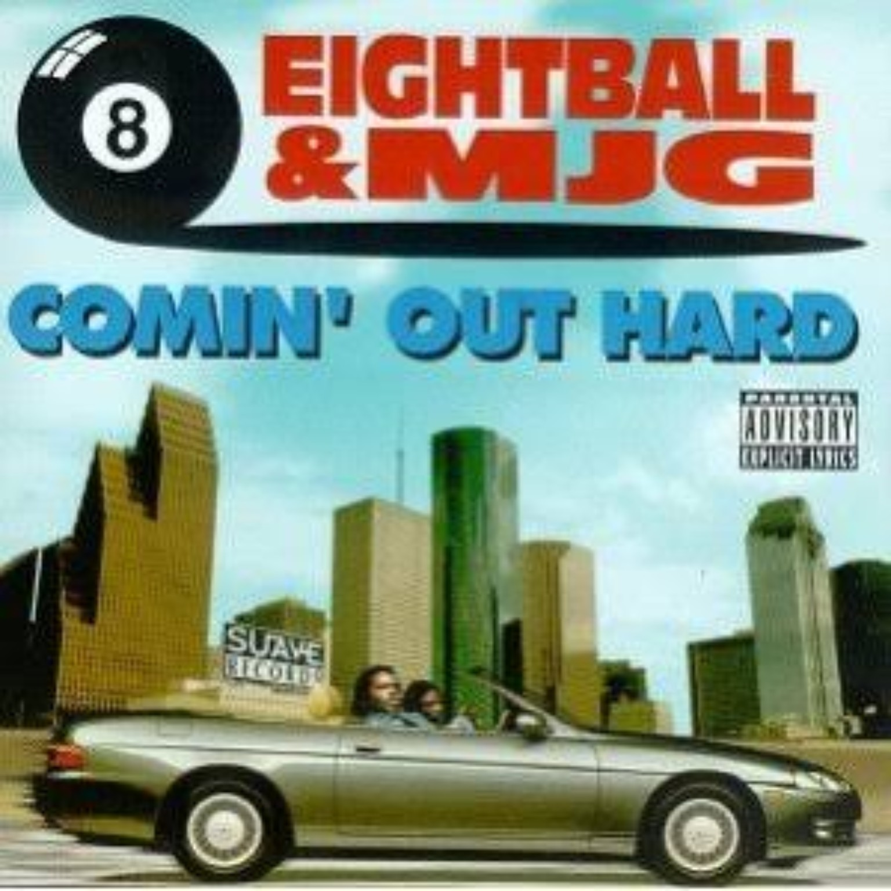
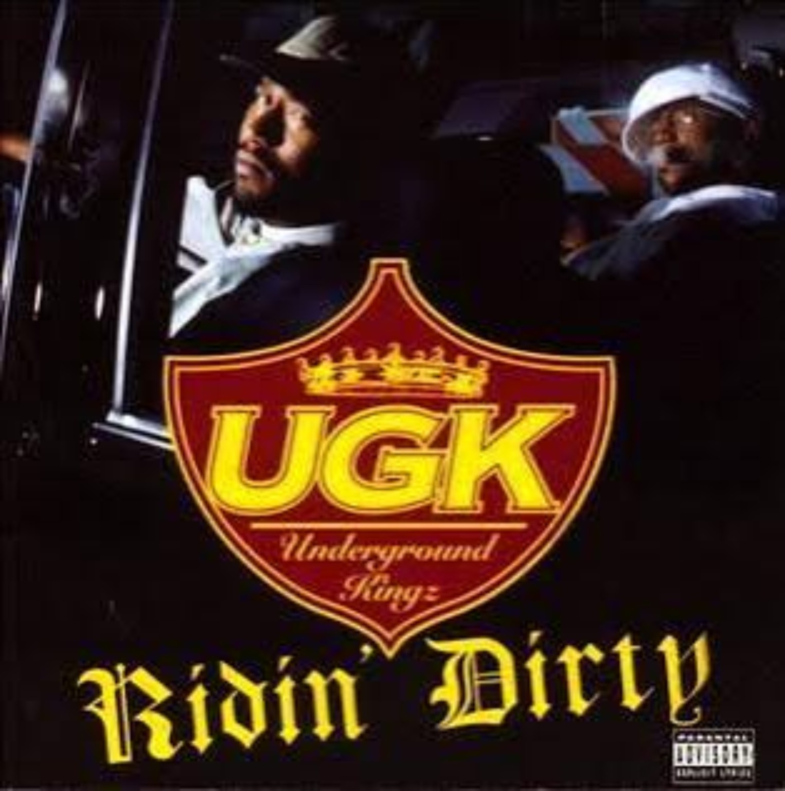
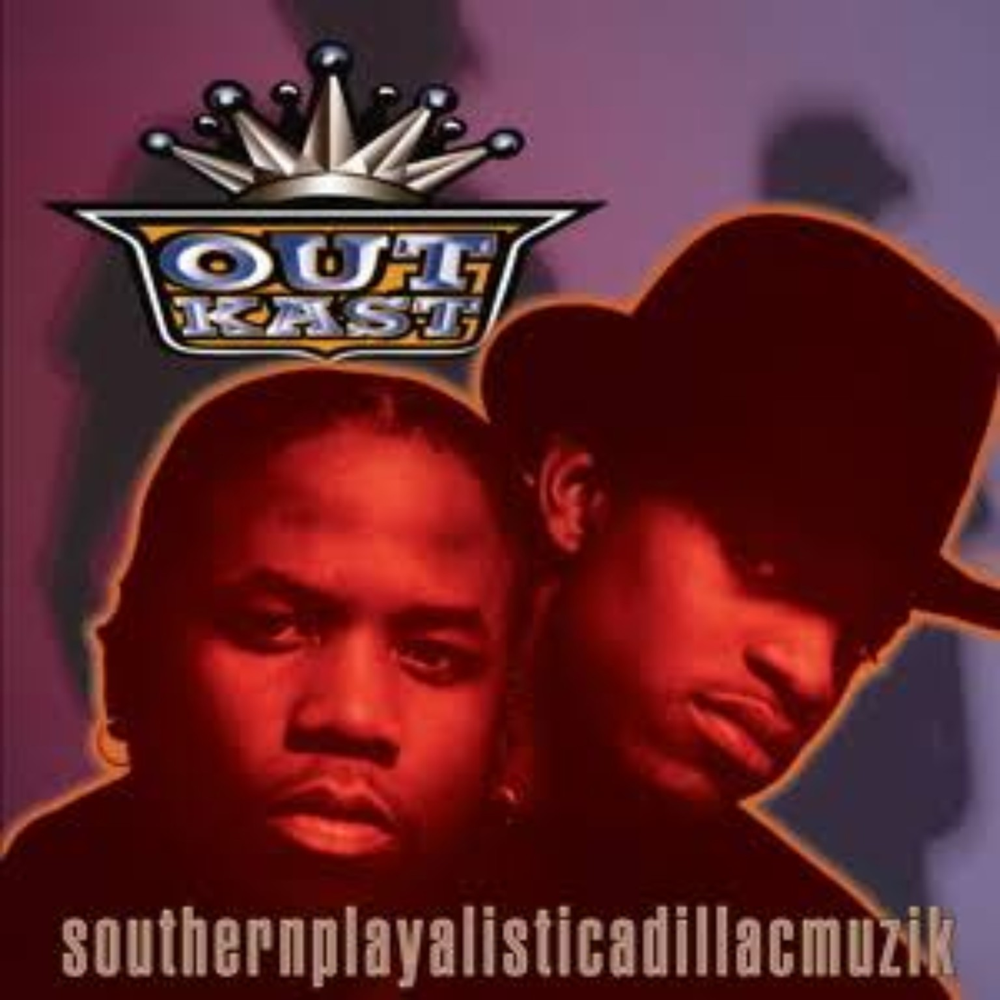
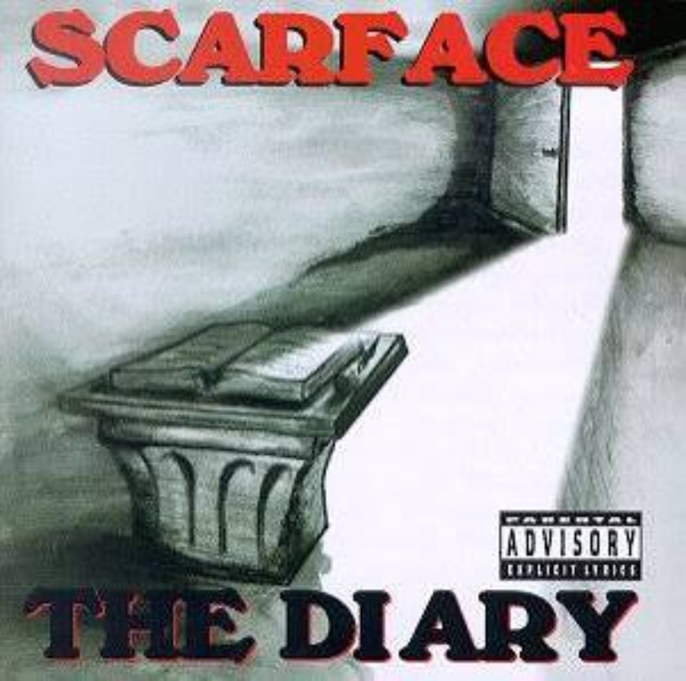
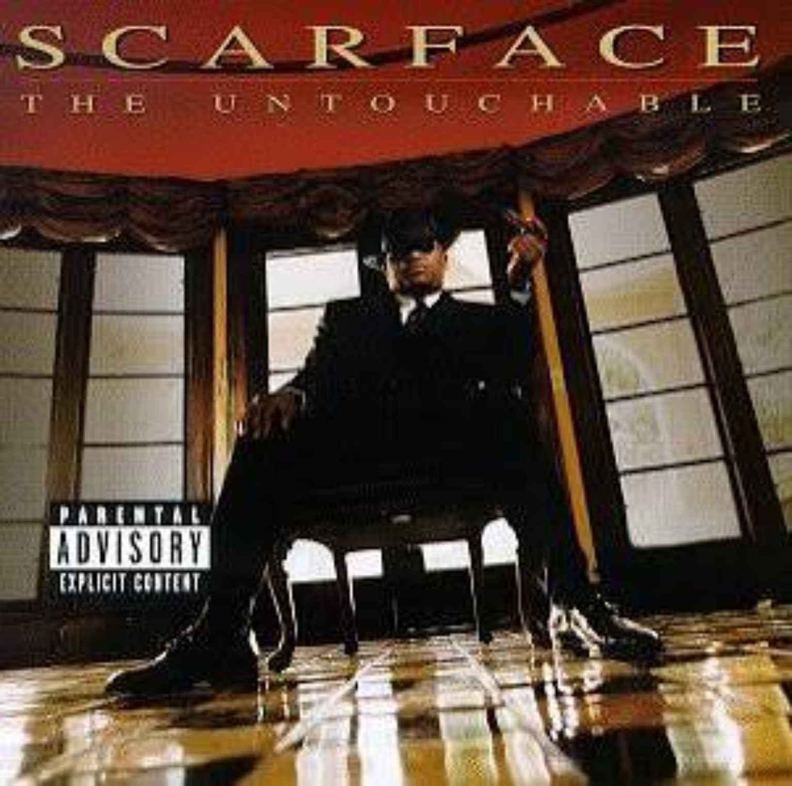

Southern hip-hop did not become rap’s center of gravity overnight.
Before Atlanta became an industry capital, before trap became rap’s dominant language, before New Orleans, Houston, Memphis and Baton Rouge had their sounds replicated worldwide, Southern artists spent years building independent ecosystems. Cities developed distinct slang, drum patterns, flows, production styles and philosophies, often without meaningful support from the traditional rap establishment.
This is not a sales chart or a referendum on national acclaim. We weighed full-album quality, replay value, production, songwriting, influence, regional importance, longevity, cultural impact and what each project represents within Southern hip-hop history.
The picks are not automatically the biggest singles. They are the songs that best represent why we connect with the album — including deep cuts, personal favorites and records already highlighted in previous 4DK conversations and reviews.
Cover art loads from Apple’s public music catalog only when the artist and album match closely. If an exact match is not found, a labeled 4DK fallback remains in place instead of forcing the wrong cover.
Some of these are polished masterpieces. Others are raw regional documents whose rough edges are part of their authority. These are the 25.
Culture
By 2017, Migos had already spent years influencing how an entire generation rapped. Culture was the moment the rest of the industry fully caught up.
Quavo, Offset and Takeoff had never sounded this disciplined as a unit. Their overlapping flows, ad-libs and pocket-switching became part of rap’s everyday vocabulary, while producers including Metro Boomin, Zaytoven and Murda Beatz helped define the spacious Atlanta sound that dominated the late 2010s. Culture distilled the group’s approach into 13 tracks without overextending the formula.
“Bad and Boujee” is the obvious monster, but judging the album through that single alone misses its range. “T-Shirt” shows all three members occupying the same atmosphere while maintaining distinct voices. “What the Price” is darker and more melodic, and “Kelly Price” demonstrates how easily Migos could push beyond straightforward club records.
Why It’s #25
Its impact is undeniable, but much of the style Migos perfected on Culture had already been developing through Atlanta mixtapes and the group’s earlier work. That places it behind albums that did more than refine a movement — they established the regional blueprint itself.

Savage Life
Savage Life sounds like Baton Rouge. Not an industry interpretation of Baton Rouge. Not a polished crossover attempt. Baton Rouge.
Webbie’s debut arrived in 2005 through Trill Entertainment, with Mouse on tha Track handling much of the production alongside contributions from Mannie Fresh, DJ Paul, Juicy J and others. The beats are heavy but uncluttered, leaving room for Webbie’s thick Louisiana accent, conversational delivery and relentless personality.
“Give Me That” is the recognizable single, but the album’s identity runs deeper. “How U Ridin’” feels like Webbie introducing the entire Savage Life philosophy. “Laid Way Back” catches him in an especially natural pocket, while records with Boosie such as “Full of Dat Shit” show why their chemistry became so important to Baton Rouge rap.
Why It’s #24
Savage Life gets the edge over Culture because of regional identity. Migos had the larger national moment. Webbie made an album that feels inseparable from the culture that produced him.
Bad Azz
Boosie’s greatest weapon has always been believability.
His voice is unmistakable, but Bad Azz works because Boosie could move from reckless street records to pain, nostalgia and vulnerability without sounding like he had changed characters. The 17-song album captures the Baton Rouge star before the mythology around him became nearly as significant as the music.
“Set It Off” delivers the confrontation immediately. But “I Remember,” “My Struggle” and “Goin’ Thru Some Thangs” explain why his audience connected with him so deeply. Boosie’s strongest songs sound less like studio performances than firsthand accounts delivered by somebody who was there.
Why It’s #23
Boosie’s influence in Louisiana and across the Deep South is larger than conventional national rap conversations often acknowledge. Bad Azz is not as structurally precise as the elite albums ahead of it, but as a document of Baton Rouge street rap, it belongs here.

When the Smoke Clears: Sixty 6, Sixty 1
This is Three 6 Mafia carrying its underground Memphis DNA into a larger arena without sanding off the edges.
DJ Paul and Juicy J preserved the hypnotic drums, chants and dark atmosphere that defined the camp while giving the records enough scale to travel beyond Memphis. The album is long, but the peaks are substantial. “I’m So Hi” captures the group’s hypnotic side. “M.E.M.P.H.I.S.” turns hometown pride into something menacing. “Who Run It” became so durable that rappers were still attacking the instrumental generations later.
The UGK and Project Pat collaboration “Sippin’ on Some Syrup” feels less like a random feature pairing than a meeting between multiple branches of Southern rap.
Why It’s #22
Three 6 has a more important album coming later. When the Smoke Clears represents the moment their underground ideas became scalable without becoming generic.
Ghetto D
Few albums on this list represent an empire as clearly as Ghetto D.
Master P was not simply selling himself. He was selling No Limit as an entire universe — the tank, the Pen & Pixel covers, Beats By the Pound production, the roster and a Louisiana movement operating like its own industry.
“I Miss My Homies” gives the album emotional weight. “Bourbons and Lacs” became Southern riding music. The title track is grittier than listeners who only remember the major singles may expect. And yes, “Make ’Em Say Uhh!” became an anthem. But the album is larger than that record.
Why It’s #21
There are technically stronger MC performances above it, but few projects changed the economics and possibilities of Southern rap more dramatically. Ghetto D represents the moment being independent-minded, Southern and commercially enormous stopped sounding contradictory.
Word of Mouf
There was a period when Ludacris might have been the most entertaining rapper alive. Word of Mouf is the clearest snapshot of why.
Luda could rap at a high technical level without making skill feel academic. His voice could become a growl, yell, whisper, cartoon character or punchline machine depending on what the beat required. Production from Timbaland, Organized Noize, Jazze Pha, Bangladesh, Swizz Beatz and KLC gives the album enough variation to match his personality.
The singles were massive, but “Growing Pains” reveals the album’s depth. It is reflective without losing Atlanta’s character. “Coming 2 America” is an elite opener, while “Cry Babies” shows how easily Luda could overwhelm a beat.
Why It’s #20
The album is somewhat sprawling, a common problem during the CD era, but its best records capture peak Ludacris: technically sharp, funny, charismatic and nearly impossible to imitate.
Teflon Don
Teflon Don is Rick Ross identifying the most effective version of Rick Ross. Everything became cinematic.
The beats got bigger. The features got bigger. The imagery got richer. Rather than trying to prove he was the most technical rapper in the room, Ross committed to presence, detail, beat selection and the larger-than-life Maybach Music aesthetic.
“Tears of Joy” is Ross at his most reflective and cinematic. “Maybach Music III” extends one of rap’s strongest luxury-rap series. “Live Fast, Die Young” connects Ross and Kanye at a moment when both understood how expansive rap production could sound.
Why It’s #19
Ross has a deep catalog, but Teflon Don is the most concentrated version of his strengths. At only 11 tracks, it avoids much of the filler that weakened plenty of major-label rap albums before it. It is luxury rap with the street foundation still visible underneath.
DS2
If you want to understand why Future became one of his generation’s defining rappers, start here.
DS2 arrives at the end of the legendary Monster / Beast Mode / 56 Nights stretch and sounds like an artist who has fully discovered his world. The production is cold, drugged-out and repetitive in the most deliberate sense, built around atmosphere as much as traditional song structure. Future bends melodies until rapping and singing stop functioning as separate categories.
“Thought It Was a Drought” establishes the tone immediately, but the album becomes more revealing away from the obvious records. “Colossal” is triumphant. “Blood on the Money” feels nearly funereal. “Kno the Meaning” looks backward at the run that made the album possible.
Why It’s #18
Future’s influence after DS2 is everywhere. But on this ranking, albums ahead of it carry greater foundational importance to specific Southern movements. Still, as a modern Southern rap album, this is essential.

Mystic Stylez
Before the Three 6 sound became part of mainstream rap’s DNA, it sounded like this. Dark. Lo-fi. Hypnotic. Creeping.
Released in 1995, Mystic Stylez was produced entirely by DJ Paul and Juicy J. The group’s sound combined eerie samples, repetitive hooks, trunk-rattling drums and an atmosphere closer to a horror film than a conventional rap album.
But reducing Mystic Stylez to horrorcore misses its larger significance. You can hear pieces of future Memphis rap, crunk, trap and production ideas that later generations would revive. “Da Summa” gives the darkness a laid-back summer feel. “In da Game” is pure Memphis. The title track drops the listener directly into the Hypnotize Minds universe.
Why It’s #17
Its rawness is both the reason it is not higher and the reason it belongs. There are smoother, more complete albums ahead. Few are more foundational.

We Can't Be Stopped
Long before “the South got something to say,” Houston had the Geto Boys forcing people to listen.
We Can’t Be Stopped is confrontational, uncomfortable, funny, paranoid and groundbreaking. Scarface, Willie D and Bushwick Bill were not trying to make Southern rap acceptable to outsiders. That was the point.
And then there is “Mind Playing Tricks on Me.” It is bigger than a great Southern rap record. It remains one of hip-hop’s defining examinations of paranoia, fear and psychological pressure.
Why It’s #16
Some of the album’s shock material has aged differently from the storytelling that made its greatest moments durable. That is part of why later Scarface work ranks higher. Historically, however, this album is indispensable. It helped dismantle the idea that important hardcore rap had to come from New York or Los Angeles.
400 Degreez
This is where Cash Money’s regional sound became national.
Mannie Fresh produced the entire album, giving Juvenile a musical environment that sounds unmistakably New Orleans — bounce DNA, thick bass, strange keyboard lines and drums that move differently from anything Atlanta, Memphis or Houston was doing.
“Ha” and “Back That Azz Up” became cultural records, but 400 Degreez is not carried by two singles. “Gone Ride With Me” is one of Juvenile’s smoothest performances. The title track is pure confidence. “Ghetto Children” brings a reflective edge. Throughout the album, Juvenile’s accent and phrasing become part of the production itself.
Why It’s #15
The influence extends beyond Juvenile. This album helped open the door for the Cash Money takeover that would eventually produce the Hot Boys, Big Tymers and Lil Wayne’s rise. New Orleans already had a rich rap history. 400 Degreez made the entire country pay attention.
2014 Forest Hills Drive
The newest kind of Southern classic on this portion of the list.
No giant concept gimmick. No overloaded guest list. No attempt to chase every sound happening in 2014. Cole built an album around memory, ambition, ego, adulthood, home and the realization that achieving your dream does not automatically answer every question you had before success.
“03’ Adolescence” is exactly the type of deep cut that makes Forest Hills Drive work beyond its hits. “January 28th” is pure MC confidence. “A Tale of 2 Citiez” brings aggression, while “Love Yourz” became one of Cole’s defining songs.
Why It’s #14
It does not have the same foundational Southern impact as the projects above it, but its album construction, consistency and longevity demand a place. Cole proved a Southern rapper could make a deeply personal blockbuster without abandoning traditional MC values.
The Fix
Most rappers do not make one of their best albums this deep into a career. Scarface did.
Released in 2002 during his Def Jam South era, The Fix paired Face with production from Kanye West, Mike Dean, Nottz, The Neptunes and others, with guests including Jay-Z, Nas and Faith Evans. But the names never overwhelm him. Scarface’s voice remains the center.
“In Cold Blood” opens the album with veteran authority. “Heaven” turns inward. “In Between Us” places Face next to Nas without either MC compromising his style. Even the larger records feel grounded because Scarface never sounds like he is auditioning for the mainstream.
Why It’s #13
The Fix is proof of longevity. By this point, Scarface had already helped define Houston rap, succeeded with the Geto Boys and produced multiple solo classics. Instead of fading, he made an album that introduced his writing to another generation. It is not ranked above The Diary because The Diary is the more foundational Scarface statement. But the gap is not enormous.
Soul Food
If OutKast showed how futuristic Atlanta could sound, Goodie Mob showed how heavy Atlanta could feel.
Soul Food is Southern rap with dirt underneath its fingernails. Organized Noize gave the album warmth and soul, while CeeLo, Big Gipp, Khujo and T-Mo rapped about poverty, racism, surveillance, spirituality, family and survival from an unmistakably Southern perspective.
“Cell Therapy” is the famous record, but “Thought Process” may better explain the album’s strength. Every voice brings a different texture. “Soul Food” turns home and family into something almost sacred. “Goodie Bag” is gritty Dungeon Family chemistry.
Why It’s #12
This album’s influence is not measured only by direct copies. It helped establish the Dungeon Family worldview — Southern, Black, thoughtful, experimental and unwilling to translate itself for anybody else. The 11 albums above it simply combine that cultural importance with greater individual album impact or replay value.
Urban Legend
T.I.’s run from Trap Muzik through Paper Trail is one of the strongest album runs any Southern rapper has produced. Urban Legend is the bridge between hunger and superstardom.
“Bring Em Out” and “U Don’t Know Me” became the records everybody knows, but the album remains strong because of everything surrounding them.
“Motivation” is peak T.I. swagger without needing a crossover hook. “Prayin for Help” adds vulnerability. “Tha King” establishes exactly how Tip viewed his position before King turned the claim into a full album statement.
Why It’s #11
T.I. has three albums inside the top 11, which says more about his peak than any paragraph could. Urban Legend lands third among those three because Trap Muzik has greater genre-defining importance and King is the more complete superstar album. But this is not filler between classics. It is another classic.

Comin' Out Hard
Memphis did not begin with Three 6 Mafia. 8Ball & MJG were already establishing another side of the city’s identity — slow, funky, player, streetwise and unmistakably Southern.
Ball and G sound hungry but already developed. Their chemistry is not based on sounding alike. Ball’s heavier voice and MJG’s sharper cadence create natural contrast.
“Pimps” stretches into a full Southern rap atmosphere. “Armed Robbery” is storytelling. “Mr. Big” and the title track show how fully formed their perspective already was.
Why It’s #10
This is where the list reaches the albums that are nearly impossible to remove. Comin’ Out Hard predates the national Southern takeover and helped create a language that later Memphis, Houston and Atlanta artists could build around. No gimmicks. Two MCs. A regional sound. A blueprint.

Ridin' Dirty
Country rap tunes before the phrase became fashionable.
Ridin’ Dirty is Pimp C and Bun B completely inside their own world — Texas highways, hustling, relationships, mortality, candy-painted cars and Southern pride. It was primarily shaped by Pimp C’s production alongside N.O. Joe and others.
This is not a singles album. “One Day” is one of Southern rap’s great meditations on mortality. “Murder” lets Bun and Pimp attack the same record from completely different angles. “Diamonds & Wood” is Texas rap mythology condensed into one song.
Why It’s #9
UGK’s influence lives everywhere from Houston and Louisiana to Atlanta and beyond. Ridin’ Dirty captures both halves of what made them special: Bun’s elite MC ability and Pimp C’s total musical vision. The eight projects above it simply occupy even larger spaces in Southern album history.
Trap Muzik
The title ended up naming an era.
Trap existed before T.I. Trap existed before this album. Nobody gets to erase the work already happening in Atlanta. But Trap Muzik helped take that world, define it as an album concept and give it a name that eventually became one of the biggest genre labels in modern music.
The production — especially T.I.’s chemistry with DJ Toomp — gives the record grit without making every track sound identical. “Doin’ My Job” is an essential deep cut because it gives the trap perspective context instead of merely glorifying it. “Be Easy” is pure Tip confidence. “Let’s Get Away” proves the album can breathe. “T.I. vs. T.I.P.” introduces an internal conflict Tip would later turn into an entire album statement.
Why It’s #8
This is one of the records that gives T.I. a legitimate argument whenever the greatest Southern rapper conversation begins. It is not merely a collection of songs. It helped define an identity and, eventually, a genre vocabulary.

Southernplayalisticadillacmuzik
Before OutKast became the group capable of making ATLiens, Aquemini and Stankonia, they had to make the world understand Atlanta. This album did that.
Released in 1994, OutKast’s debut was produced by Organized Noize and recorded around Atlanta’s emerging Dungeon Family ecosystem. Its importance extends beyond the duo.
“Ain’t No Thang” introduced André and Big Boi as two young MCs already operating at an unusually high level. “Crumblin’ Erb” showed the musicality that would later expand dramatically. “Git Up, Git Out,” alongside Goodie Mob, established the larger Dungeon Family community.
Why It’s #7
Later OutKast albums are more ambitious. But none of those albums happen without this one. Southernplayalisticadillacmuzik is Atlanta announcing that Southern rap was not a novelty, side market or regional imitation of somebody else’s sound. It had its own history, slang, production and worldview.
King
This is what happens when hunger meets budget, confidence and perfect timing.
By 2006, T.I. was no longer trying to become Atlanta’s next star. He sounded like somebody who believed the argument was already over.
King works because the album does not sacrifice Tip the rapper to create Tip the superstar. “What You Know” is gigantic, but “I’m Talkin’ to You” has him rapping with battle-record intensity. “Live in the Sky” adds emotional weight. “Top Back” is trunk music built for exactly what the title suggests. The album also arrived as Atlanta was becoming the unquestioned center of rap.
Why It’s #6
Among T.I.’s classics, Trap Muzik may be more foundational. King is more complete. It is the album where his King of the South claim stops sounding like pure provocation and starts sounding like a credible reflection of where he stood in mainstream rap.
ATLiens
Southernplayalistic introduced OutKast. ATLiens transformed them.
The colors became darker. The production became spacier. André’s worldview was changing, Big Boi was becoming an even sharper MC, and the duo sounded increasingly uninterested in meeting anybody else’s expectations.
“Elevators” gave them a major record without abandoning that strangeness, but the album cuts tell the larger story. “Ova da Wudz” is straight rapping. “Babylon” is reflective and uneasy. “13th Floor/Growing Old” feels like the duo thinking beyond the moment they were living in.
Why It’s #5
This is one of hip-hop’s great sophomore evolutions. OutKast could have made another version of its debut. Instead, they rebuilt the sound. That willingness to evolve is what ultimately separated OutKast from nearly everybody else. Aquemini ranks higher because it eventually combined all those different sides into the group’s ultimate statement.
Let's Get It: Thug Motivation 101
There are albums that become classics. Then there are albums that become languages. Thug Motivation 101 belongs in the second category.
The ad-libs. The snowman. The motivational language. The production. The mixture of street detail and aspirational hustler talk. It all became instantly identifiable.
The deep cuts are why the album lasts. “Standing Ovation” feels like a mission statement. The opening title track establishes the philosophy. “Trap or Die” is movement music. “Go Crazy” proves Jeezy’s style could work over soulful production just as easily as Shawty Redd’s darkness.
Why It’s #4
This album has legitimate #1 credentials. Its influence, timing, impact and staying power are substantial. Two decades later, descendants of Jeezy’s approach remain audible throughout Southern street rap. The three albums ahead of it win by the smallest margins.
Tha Carter II
WHEN WAYNE BECAME WAYNE.
Tha Carter II is where Lil Wayne stopped sounding primarily like the kid who grew up inside Cash Money and started sounding like an MC building an identity that belonged completely to himself. It was the first Carter album made without Mannie Fresh serving as the musical architect, forcing Wayne into a broader production environment. And he responded by rapping his ass off.
“Tha Mobb” barely needs a traditional song structure because Wayne is simply attacking the record. “Best Rapper Alive” turns the title into a challenge. “Money on My Mind” balances street Wayne and technical Wayne perfectly. “Hustler Musik” remains one of the clearest examples of how naturally he could combine melody, pain and confidence.
This is also the bridge into what came next: Dedication 2, the 2006–07 feature run, “Cannon,” “Upgrade U,” “We Takin’ Over” and Da Drought 3. The version of Wayne who eventually became the biggest rapper alive was being constructed here.
Why It’s #3
We have already established the 4DK Carter order: Tha Carter II > Tha Carter > Tha Carter III. Carter III was the bigger event. Bigger budget. Bigger singles. Bigger commercial peak. Carter II has the hunger, rapping and consistency. In 4DK’s book, it is Wayne’s best album — by far.
Aquemini
This is OutKast putting everything together: the Southern foundation of the debut, the alien experimentation of ATLiens, the elite rapping, the live instrumentation, the storytelling and the Dungeon Family culture.
“Return of the G” opens the real album with André addressing the perception that his evolution somehow made him less authentic. Then Big Boi steps in and reminds everybody that OutKast always worked because two dramatically different personalities could occupy the same universe.
“Aquemini” is a masterclass in chemistry. “Da Art of Storytellin’ (Pt. 1)” is exactly what the title promises. “Synthesizer” pushes the group’s sound further into the future. Even the album’s bigger records do not feel disconnected from the deep cuts.
Why It’s #2
For 4DK, Aquemini is OutKast’s best album. Bars. Lyrics. Culture. Production. Singles. Deep cuts. Everything. You can play it front to back without needing to explain away half the track list. On another day, somebody could call this the greatest Southern album ever and make a legitimate argument.

The Diary
The greatest Southern hip-hop album ever. Not because it had the largest singles. Not because it sold the most records. Because few albums in Southern rap combine writing, atmosphere, storytelling, darkness, maturity and regional influence this completely.
The Diary plays like a movie. Scarface’s third solo album was built with production from Face himself, Mike Dean, N.O. Joe and Uncle Eddie. The album is remarkably lean. Once the short intro and outro pieces are removed, there is almost nothing to waste.
“No Tears” is chilling because Face does not need to scream to sound dangerous. “Jesse James” is cinematic street rap. “G’s” sounds lived-in rather than invented. “I Seen a Man Die” takes death and consequence somewhere deeper than standard gangsta rap. Then there is “Hand of the Dead Body” with Ice Cube and Devin the Dude, where three of rap’s sharpest observers meet inside the same record.
Even the return to “Mind Playing Tricks” feels appropriate because paranoia has always been central to Scarface’s writing.
Why It’s #1
Scarface helped establish what a Southern MC could be before the industry fully understood Southern rap. Houston’s influence would spread everywhere. UGK would carry Texas traditions forward. New Orleans would explode. Memphis would develop its own underground universe. Atlanta would eventually become rap’s center of gravity. But Scarface was already demonstrating that a Southern rapper could make dark, literary, fully realized albums that stood beside anything coming from either coast. The Diary is not simply important because it influenced what came later. It still sounds great. Historical importance gets an album into the conversation. The music has to keep it there. Three decades later, The Diary still does both.
HONORABLE MENTIONS
Albums that survived deep into the process, plus foundational cuts too important to leave without context. Every record gets a real 4DK case and its own pick tracks.
The Inspiration
Following an album as era-defining as TM101 was almost an impossible assignment, but Jeezy did not try to remake it track for track. The Inspiration is cleaner, bigger and more polished while keeping the cold motivational language that made him one of the defining voices of mid-2000s Southern rap. The title track feels like a direct continuation of the TM101 philosophy, while “Bury Me a G” and “Dreamin'” give the project more texture than the giant singles alone suggest. It misses the 25 because its predecessor is the sharper landmark, not because this is a weak follow-up.
Back for the First Time
This is Ludacris arriving nationally with almost every weapon already developed: elastic flows, cartoon-level vocal control, punchlines, charisma and the ability to make technical rapping feel fun instead of clinical. The biggest records opened the door, but cuts like “U Got a Problem?” and “Game Got Switched” explain why Luda became more than a singles rapper. Word of Mouf ultimately gets the Top-25 slot because it is the fuller peak statement, but Back for the First Time is where one of the South's most naturally entertaining MCs announced himself.

The Untouchable
Scarface's catalog is deep enough that an album this strong can miss the Top 25. The Untouchable catches Face at the height of his national visibility without sanding down the darkness, introspection and fatalism that made his writing different from almost everybody around him. “Smile” is the crossover landmark, but “Mary Jane” and the title track are better examples of how comfortably Face could move between vulnerability, menace and reflection. The Diary and The Fix already represent two different Scarface peaks even more completely, which is the only reason this sits outside the main list.
Chapter 2: World Domination
Chapter 2 is where Three 6 Mafia's underground Memphis language starts sounding big enough to conquer territory outside the city without losing its grime. DJ Paul and Juicy J sharpen the drums, hooks and hypnotic loops while the collective still feels dangerous and unpredictable. “Late Nite Tip” is one of the group's greatest atmospheric records, and “Tear da Club Up '97” points directly toward the crunk explosion that followed. Mystic Stylez gets the raw-foundation edge and When the Smoke Clears gets the breakthrough slot, but Chapter 2 is the bridge between both versions of Three 6.
The Listening
North Carolina belongs in the 4DK South map, and The Listening is one of the strongest arguments for why. Phonte, Big Pooh and 9th Wonder made a record rooted in everyday life, soul samples, humor and straight MC craft at a time when Southern rap was often being reduced nationally to one commercial sound. The influence grew gradually instead of through a giant first-week moment. 9th's drums and chopped soul became instantly identifiable, while Phonte's conversational writing influenced a generation of rappers who learned that technical skill did not require a larger-than-life persona.
Live from the Underground
K.R.I.T. entered his debut carrying the burden of proving that the mixtape brilliance could survive a major-label album. Live from the Underground is more structured than K.R.I.T. Wuz Here or Return of 4Eva, but it still preserves the Mississippi mixture of trunk music, soul, religion, family and Southern rap tradition. “Rich Dad, Poor Dad” gives the album emotional gravity, while “Praying Man” connects it to an older Southern storytelling tradition. It falls outside the 25 because K.R.I.T.'s most beloved work is spread across multiple tapes and albums rather than concentrated into one universally recognized landmark.
The Real Testament
Plies' debut is one of the clearest reminders that his run was deeper than the radio records. The Real Testament gave Florida a voice that could be blunt, funny, paranoid, emotional and street-level without constantly changing tone to prove versatility. “Runnin My Momma Crazy” and “100 Years” reveal the emotional side casual listeners can miss, while the harder records explain why his voice became so recognizable across the South. It does not have the same foundational reach as the albums that made the 25, but as a snapshot of mid-2000s Florida rap it still holds real weight.
www.thug.com
Before Miami and the broader Florida scene became a rotating pipeline of national stars, Trick Daddy was giving the region a working-class, neighborhood-level identity. www.thug.com is rough around the edges in exactly the right way: loud, regional, funny, angry and rooted in a version of Miami that national rap rarely centered. “Nann Nigga” became the breakthrough, but the deeper value is how completely the album establishes Trick's voice and environment. The very top Southern albums pair that regional importance with stronger front-to-back construction, but Florida history looks different without this record.
The Recession
The Recession is Jeezy adjusting his motivational street language to a country dealing with an actual economic collapse. The result is one of his most mature albums: still cinematic, still trap-rooted, but more willing to widen the lens beyond individual hustle. “Crazy World” captures the anxiety of the moment, while “Circulate” and “Don't You Know” show how strong Jeezy sounded when soulful production replaced some of the colder textures of his early run. TM101 remains the essential Jeezy album, but The Recession is one of the best examples of him evolving without abandoning the voice that made him.
The Forever Story
The Forever Story is one of the clearest modern examples of elite rapping still functioning inside a carefully built album. JID moves through family stories, technical showcases, melody and Atlanta identity without the project feeling like a collection of unrelated demonstrations. “Crack Sandwich” is vivid family storytelling, “Sistanem” is emotionally precise, and “Raydar” is the kind of performance that reminds you how ridiculous JID can be technically. Its only real disadvantage in an all-time Southern ranking is time: it already looks built to age well, but it has less historical distance than almost everything above it.
Mista Don't Play: Everythangs Workin'
Project Pat's cadences have become so deeply absorbed into modern rap that younger listeners can hear his influence before they know the source. Mista Don't Play is the clearest full-album document of that power: Memphis slang, dark humor, DJ Paul and Juicy J production and a delivery that turns simple phrases into hooks through rhythm alone. The singles are part of the story, but “Gorilla Pimp” and “If You Ain't from My Hood” show how naturally Pat could live inside the hypnotic Memphis sound. This was one of the hardest cuts from the Top-25 race.
Speakerboxxx/The Love Below
OutKast's double album is both a massive commercial achievement and a fascinating document of two artists pushing in separate directions without formally ending the group. Big Boi's Speakerboxxx is grounded in funk, Southern rap and precision. André's The Love Below is stranger, more melodic and increasingly detached from traditional rap structure. The ambition is enormous and the project produced some of the biggest records of their career. What keeps it outside the 25 is the same thing that makes it unique: as a full listen, it is less focused than the group's 1990s masterpieces.
Tha Carter III
Tha Carter III is the commercial coronation. By 2008, Wayne had already spent years building the case through mixtapes, features and Tha Carter II; this was the moment the entire mainstream had to acknowledge what had happened. “3 Peat” opens with championship confidence, “Mr. Carter” places Wayne in conversation with Jay-Z, and “Let the Beat Build” captures the looseness of Mixtape Wayne inside a blockbuster studio album. 4DK still has Carter II comfortably above it because the rapping, hunger and cohesion hit harder there, but Carter III remains essential to understanding Wayne's peak.
Islah
Islah is where Kevin Gates' years of mixtape work, emotional openness and Baton Rouge street perspective crystallized into a major album. Gates could be threatening one minute and painfully vulnerable the next without either side feeling like a marketing lane. “Hard For” and “Pride” make vulnerability feel as central to his identity as the harder records, while “Really Really” shows why his melodies could travel nationally without losing the Louisiana accent. It sits just outside the 25 because its regional influence is narrower than the foundational classics above it, not because the album lacks replay value.
4 Your Eyez Only
4 Your Eyez Only is one of Cole's most committed album concepts. Instead of chasing the broad accessibility of 2014 Forest Hills Drive, he narrows the frame around mortality, fatherhood, friendship and the idea of preserving a life through testimony. “Change” and the title track carry much of the emotional weight, while “Neighbors” turns a real incident into commentary on perception and success. Forest Hills Drive gets the Top-25 placement because it is the more complete cultural moment and the easier front-to-back replay, but 4 Your Eyez Only is arguably the more focused narrative statement.
Still Standing
Still Standing had the impossible job of following Soul Food, and instead of simply repeating the debut, Goodie Mob widened the musical frame. Organized Noize remained central, but the album feels more expansive while the group's concerns — survival, Southern identity, race, family and community — stay intact. “Black Ice” is one of the great Dungeon Family collaborations, and “Beautiful Skin” shows how thoughtful the group could be without losing its grit. Soul Food is the undeniable landmark and therefore owns the Top-25 slot, but Still Standing confirms that Goodie Mob's importance was not built on one album.
The Dude
Devin the Dude built one of the most singular lanes in Southern rap: laid-back, funny, self-deprecating, melodic and completely uninterested in pretending to be larger than life. The Dude feels almost anti-industry in how comfortable it is simply being itself. The humor matters, but so does the musicality; Devin could make a song feel conversational without sounding lazy, and Houston's smoky production gives the album a warmth that separates it from harder Rap-A-Lot releases. Its cult status and uniqueness make it an easy honorable mention; its smaller cultural footprint keeps it outside the 25.
On Top of the World
By On Top of the World, 8Ball & MJG had taken the foundation of Comin' Out Hard and expanded it into a richer, more polished Memphis sound without losing the slow-roll chemistry that made them special. “Space Age Pimpin'” became one of their signature records, but the album works because Ball and G keep balancing street detail, player talk and introspection over warm Southern production. Comin' Out Hard ranks higher because it is the foundational statement. On Top of the World proves the duo did not peak creatively the first time out.
The Minstrel Show
The Minstrel Show takes Little Brother's strengths and wraps them inside a sharper concept about Black entertainment, industry expectations and the performance of identity. The satire gives the album structure, but the real engine remains Phonte, Big Pooh and 9th Wonder's chemistry. “All for You” is one of Phonte's strongest personal records, while “Watch Me” and “Lovin' It” keep the MC side active enough that the concept never swallows the music. The Listening gets the slight historical edge as the introduction, but The Minstrel Show may be the more fully realized album.
Stankonia
Stankonia is OutKast exploding the boundaries they had already stretched on ATLiens and Aquemini. Funk, rock, gospel, electronic textures and Southern rap all collide while André and Big Boi remain elite MCs underneath the experimentation. “B.O.B.” still sounds futuristic, but “Humble Mumble” and “Spaghetti Junction” are reminders that the rapping never disappeared beneath the production ambition. Cutting this from the Top 25 was brutal. The reason is not quality; it is that OutKast already owns three spots above it, and Southern history is too deep to let one catalog occupy the entire board.
4eva Is a Mighty Long Time
4eva Is a Mighty Long Time may be K.R.I.T.'s strongest official album statement because it allows both sides of his music to exist at full length: the trunk-rattling Mississippi rapper and the reflective musician wrestling with faith, fame, depression, family and legacy. The double-album format actually serves the concept. “Get Up 2 Come Down” hits the Southern-rap side, while “Mixed Messages” and “Bury Me in Gold” reveal the internal conflict underneath the confidence. It was one of the last albums cut from the serious Top-25 race and remains a modern Southern classic.
Paper Trail
Paper Trail is T.I.'s biggest crossover album, but the reason it remains valuable is that the commercial records do not erase the tension underneath them. Written during a period of legal uncertainty, the album repeatedly circles consequences, survival and the cost of the persona Tip had built. “Ready for Whatever” and “No Matter What” carry that weight directly, while “Slide Show” closes with perspective rather than chest-beating. Paper Trail survived deep into the Top-25 process before Urban Legend took the final T.I. slot, which says plenty about Tip's 2003–08 run.
Ice Cream Man
Ice Cream Man is the album where the No Limit vision becomes impossible to ignore. Before Ghetto D turned the label into a national machine, this record helped establish the independent hustle, New Orleans-to-California connection, regional marketing and street-level branding that Master P would scale into an empire. The title track and “Bout It, Bout It II” are bigger than individual songs because they helped create the vocabulary surrounding No Limit. Ghetto D gets the Top-25 spot for being the more complete national breakthrough, but Ice Cream Man is the foundation underneath that takeover.
My Turn
My Turn is the album that moved Lil Baby from major Atlanta star to one of rap's defining voices of the early 2020s. His flow is conversational but elastic, and the project shows how much modern Southern street rap had absorbed melody without abandoning rapping. “Emotionally Scarred” is one of the clearest examples of Baby translating pressure and success into a record that feels personal rather than polished for crossover. The album's influence on the current era is real; what it lacks compared with the Top 25 is historical distance. Its long-term place is still being written.
Mr. Scarface Is Back
Scarface's solo debut belongs here because it already contains the darkness, psychological detail and narrative control that would later make The Diary one of Southern rap's defining albums. The sound is rawer and more tied to the early Rap-A-Lot era, but the writing voice is unmistakable. “A Minute to Pray and a Second to Die” and “Born Killer” show that Face's interest in consequence and mortality was present from the beginning. It misses the main list only because his own catalog contains two more complete statements that rank much higher. As an origin point, it is indispensable.
THE SOUTH BUILT ITS OWN LANGUAGE.
Scarface, OutKast, Wayne, Jeezy, UGK, T.I., Three 6 Mafia, Cash Money, No Limit and generations after them did not make one Southern sound. They built cities, scenes and styles that eventually reshaped rap itself.